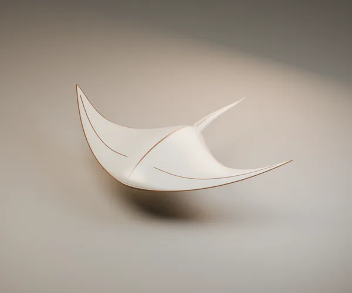
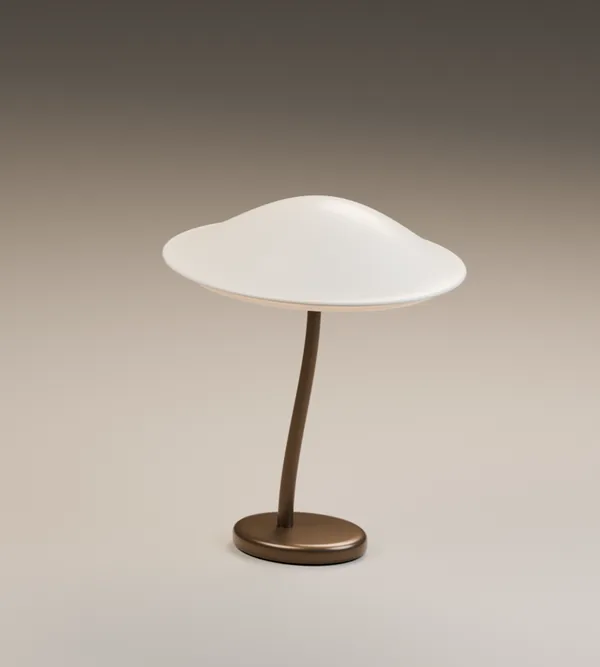
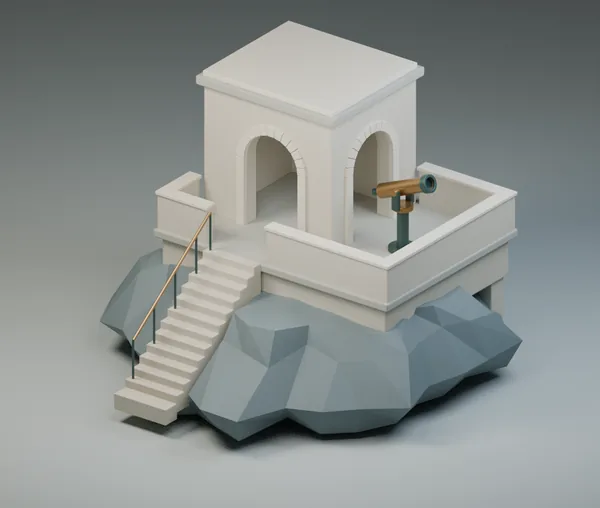
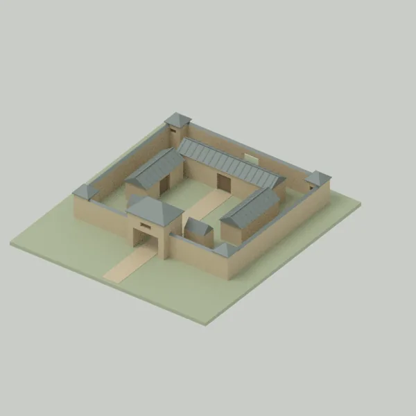

002潮翼 ↗
让一片陶瓷，也有轻轻展开的姿态。
AN OPEN NOTEBOOK OF MAKING
一些天马行空，一些动手尝试。
在这里，把想象做成有形之物，
也把沿途的方法和灵感，一页页留下来。
从一个小物件，到一个新世界。
A FEW PAGES TO START WITH

002让一片陶瓷，也有轻轻展开的姿态。

005在低阔与修长之间，寻找一盏灯的平衡。

004沿着阶梯走向岩岸，让建筑成为抵达的过程。
 008
008用一张网页，读懂孔隙、曲率与遮挡。
 009
009把转轴、装配与姿态，放进可阅读的页面。
 SD02
SD02从入口分岔，换个位置读一座院落。
模型与空间封面为静态渲染；网页封面为已有页面截图。每页保留各自的制作记录与验证范围。
THE LONGER STORY / 长期项目
进行中的一页东汉洛阳，是一次从建筑构件走向城市的研究。把院落、街道和生活的场所逐步连接，也把证据、推测与未知认真记下来。
走进洛阳研究研究进行中，尚非完成的历史复原。

KEEP THE PROCESS, TOO
那些试过的参数、走过的弯路和可以再用一次的配方，
是这本手记的另一半。